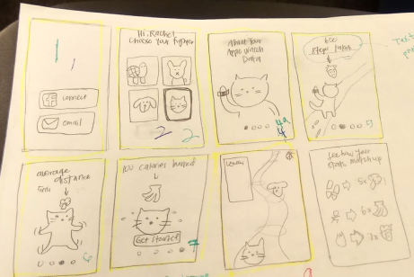
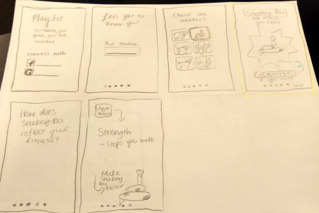
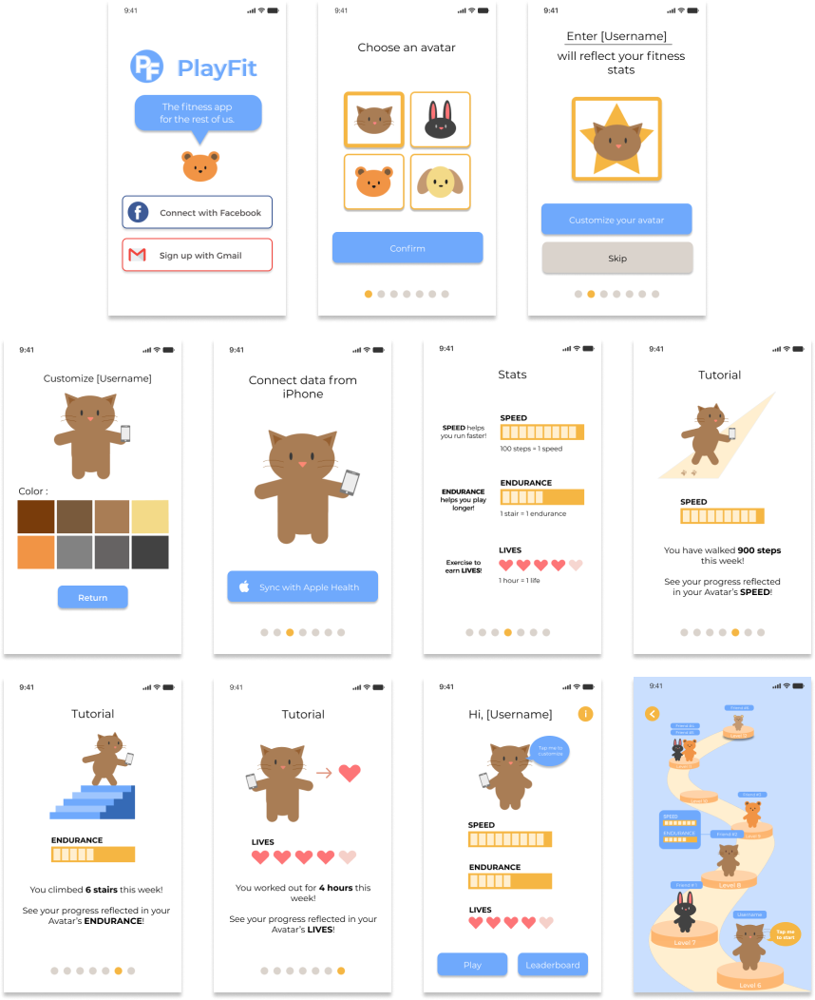
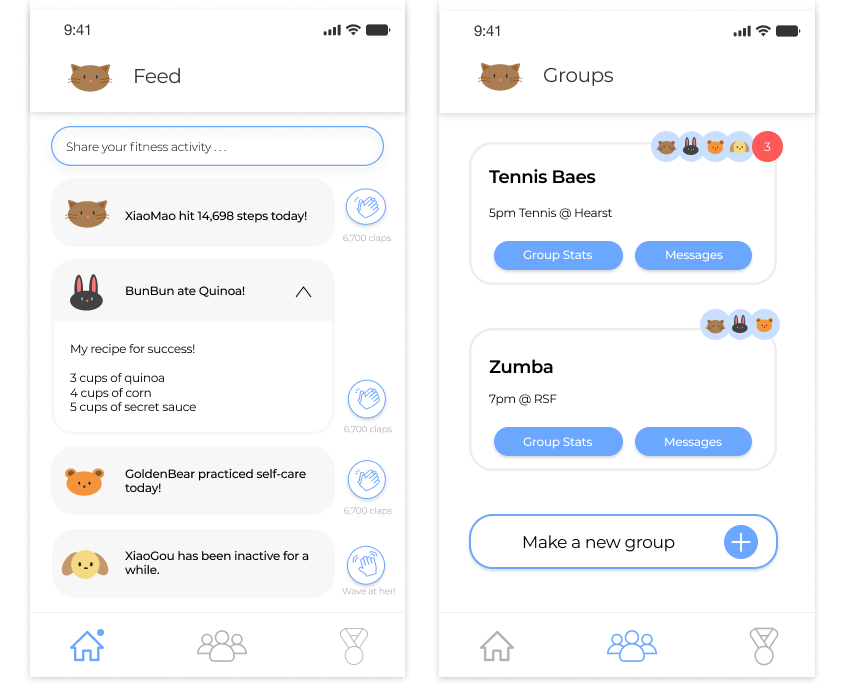

Playfit x BI pt. 2
Fall 2018
Concept exploration and testing with design consulting club
The design process is hardly ever linear and this project is no exception. Our task since its conception has diverged into multiple channels from gamifying the fitness motivation experience to a social media platform. I have divided our multi-faceted process into two parts: (1) fitness motivation game and (2) fitness app onboarding.
This page is the fitness app onboarding, which includes:
👉 Overall, a foundational framework for a seed-stage start-up app
👉 Visual exploration of onboarding process
👉 Another pivot into social media
IDEATION
After much discussion, our client and my team decided to work on the onboarding process rather than the game itself. Then, we could communicate how the fitness data and game worked together to the user.
Our team’s process was to diverge on our own and later converge as a team. Explicit onboarding would translate data literally into the game e.g. steps taken would equate to speed level. I vouched for implicit onboarding, which would translate data into game power-ups e.g. steps taken would equate to a banana power-up. I felt this would make fitness motivation more subtle and “trick” users into making fitness fun.
Our client decided on explicit onboarding because it seems less complex and more straighforward. It’s also a good starting framework.
LO-FIDELITY PROTOTYPE
Here, we split off and sketched out ideas and came together to highlight and number the screens that we thought worked best for the onboarding process.
 
MID-FIDELITY PROTOTYPE
After multiple rounds of user testing and reiteration, we settled on a basic framework that compromised the client’s requests for an avatar and our research.FINAL PRESENTATION
We chose a orange and blue color palette for our final deliverable and presented this concept to our client.
DIVERGENCE: SOCIAL MEDIA
While we referenced our research and brought up ‘social facilitation’ multiple times to back our design choices, the client became interested in looking into fitness motivation through a combined social media platform and the original gamification intent. I created the left two screens, a news feed and group chat.The newsfeed would show activities from friends or any influencer/celebrities that use the app, similar to Twitter. People can post anything related to fitness, such as healthy recipes and practicing a form of self-care. Ideally, this is a space where people can feel encouraged and safe about caring for their mind and bodies. Social interactions are facilitated through “claps”, which I took inspiration from Medium. Claps are positive and reinforcing reactions and can be pressed multiple times to express enthusiasm. If a person has been inactive for a while, users can send “waves” to check in on friends that might need a morale boost or check-in.
Groups are more private and purposefully selected by the user to encourage a stronger protection on data privacy, especially since we’re dealing with personal health data. In the Groups page, users can group their exercise buddies and chat to set up plans, motivate each other, and see each other’s progress.

Tools
Figma
Sketch
InVision
Wireframing
Sketching
User interviews
Storyboarding
Figma
Sketch
InVision
Wireframing
Sketching
User interviews
Storyboarding
Collaborators
Katherine Ong
Mariela Hernandez
Serena Chan
Mentor
Kathleen Hsu
Katherine Ong
Mariela Hernandez
Serena Chan
Mentor
Kathleen Hsu